Original public references beside rendered local templates. Photography and implementation are independently produced; source pages and observations are recorded in selection.json. Motion is verified separately in the recordings.
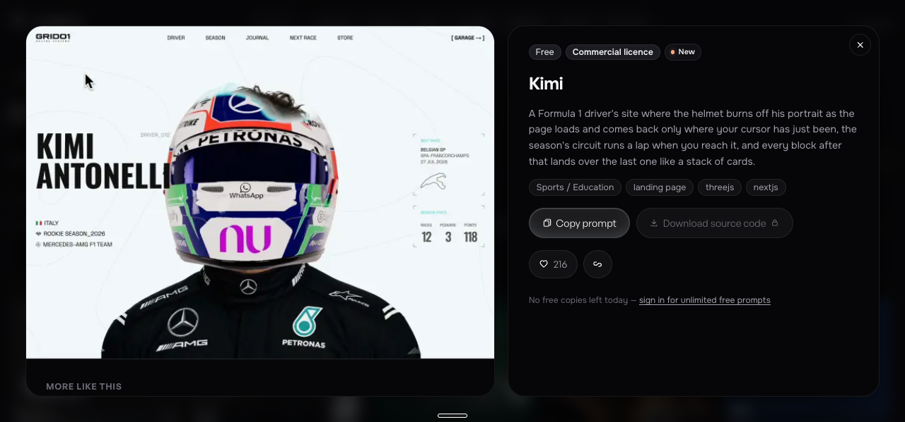
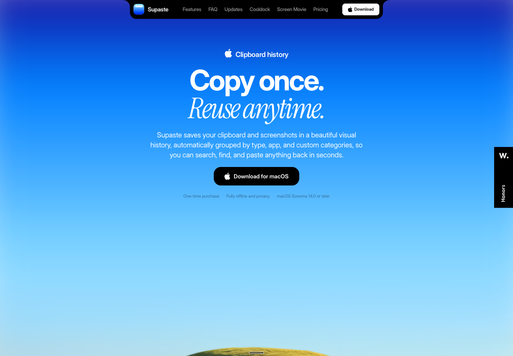
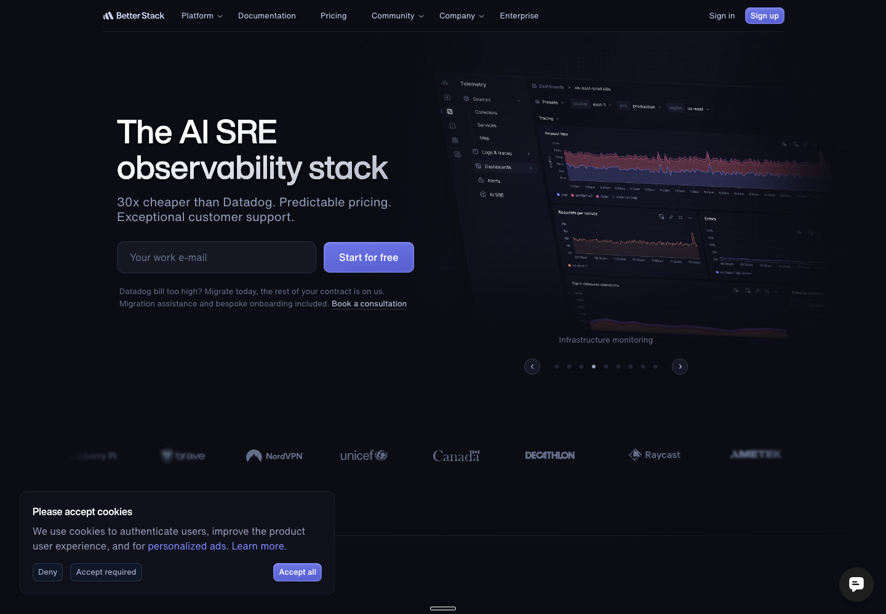
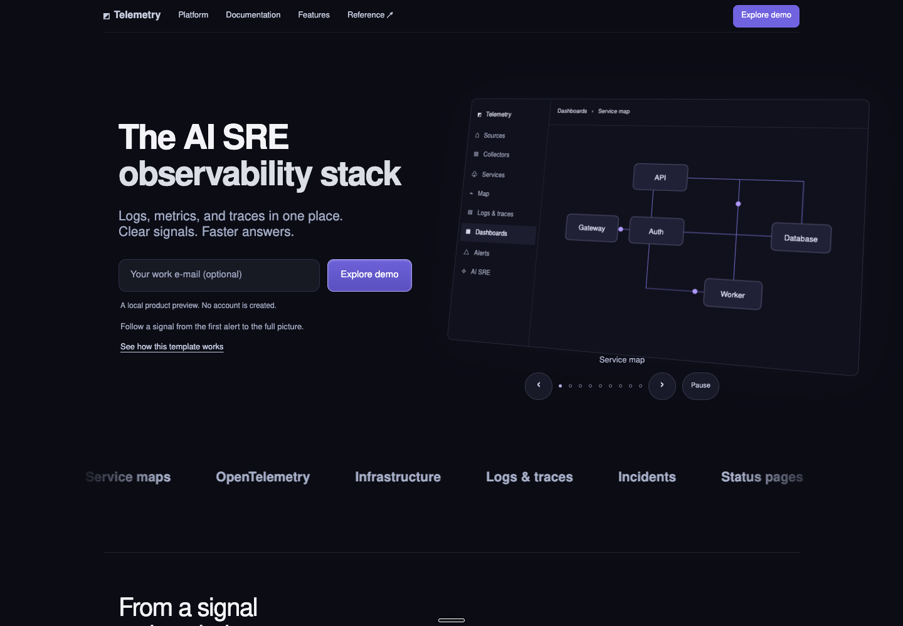
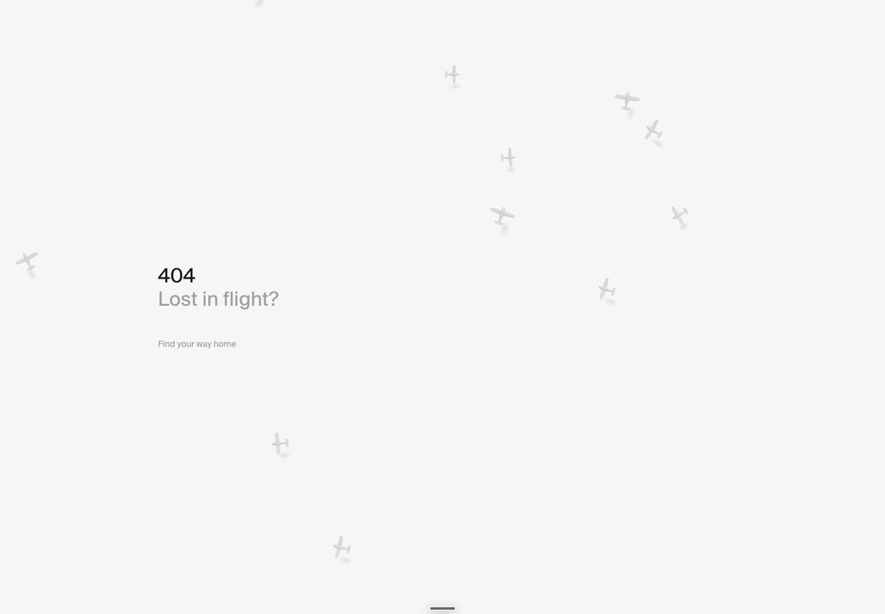
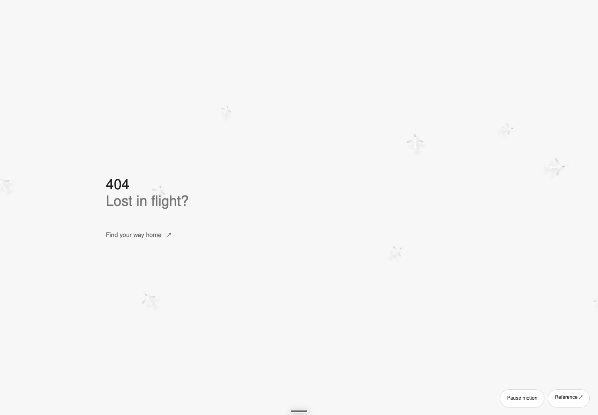
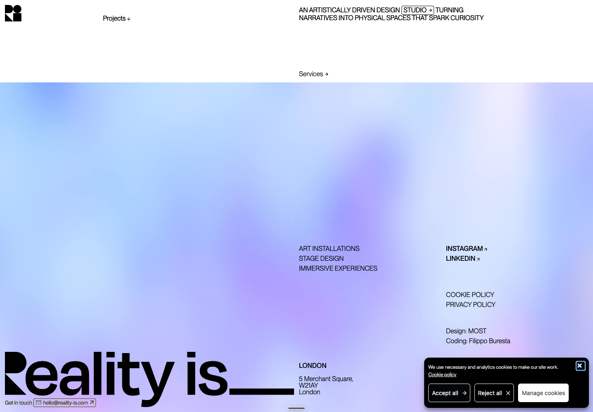
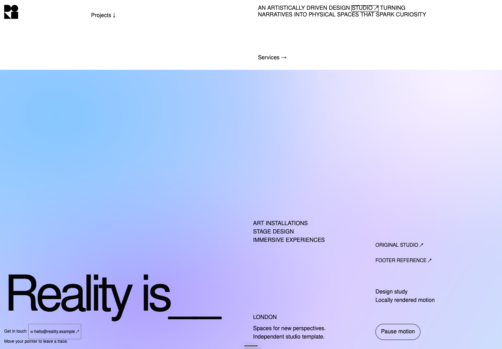
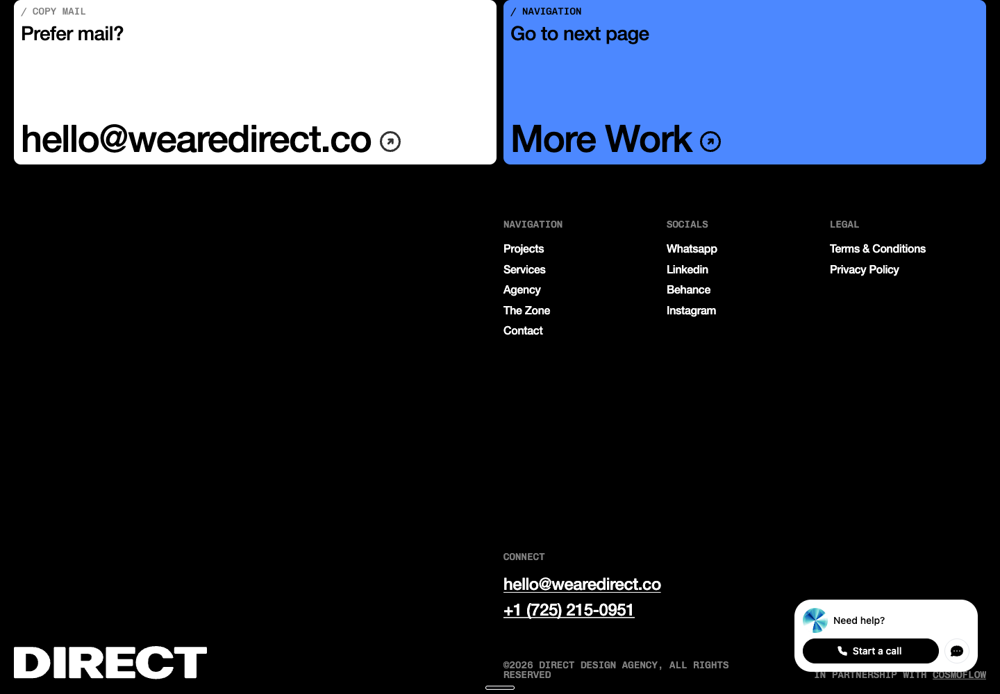
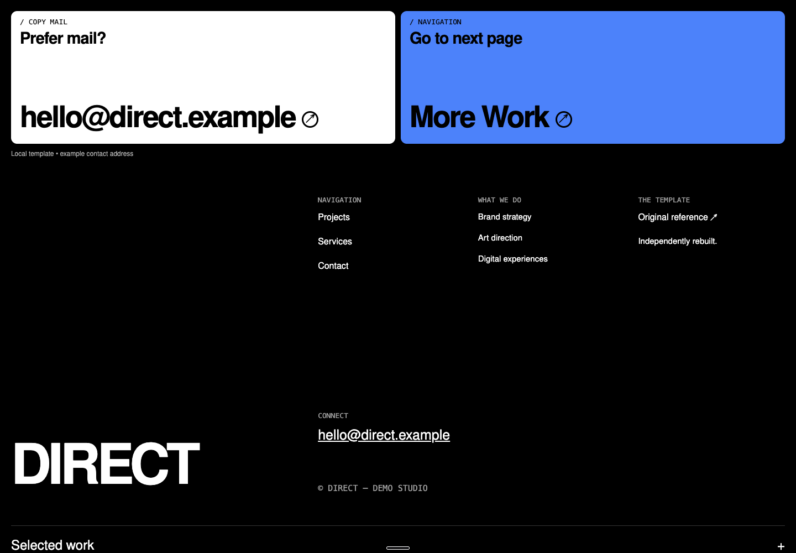
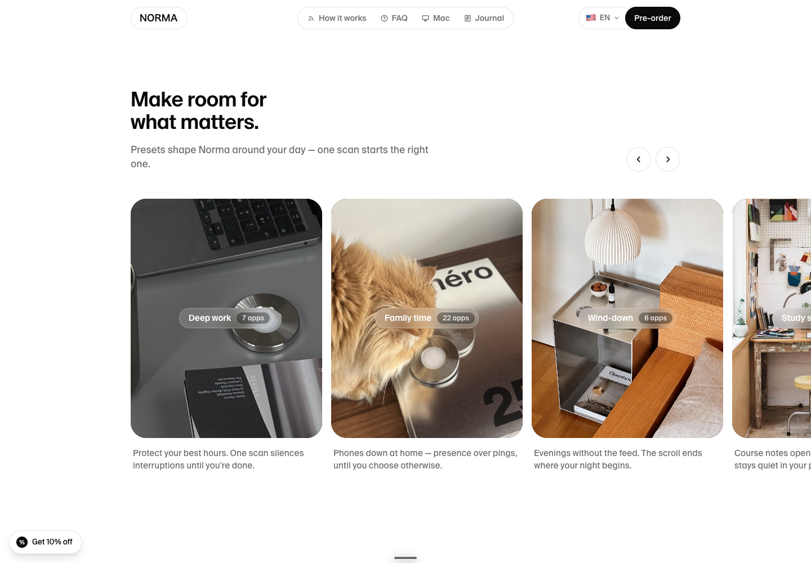
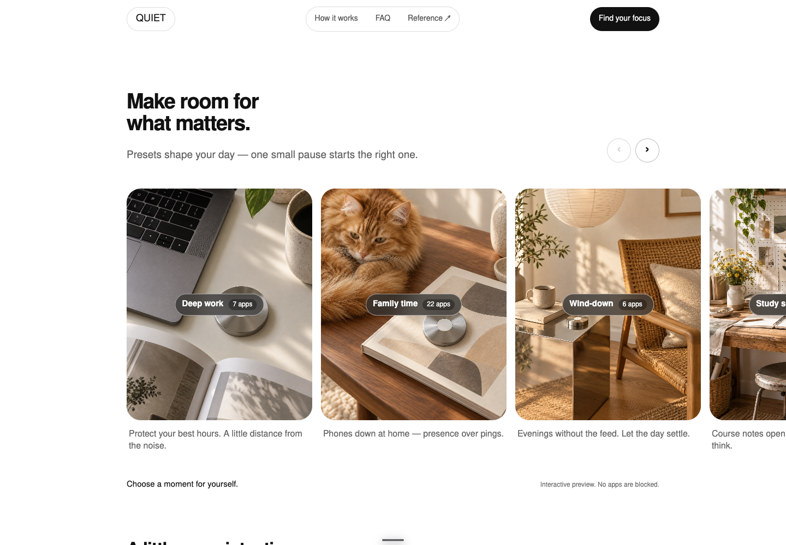